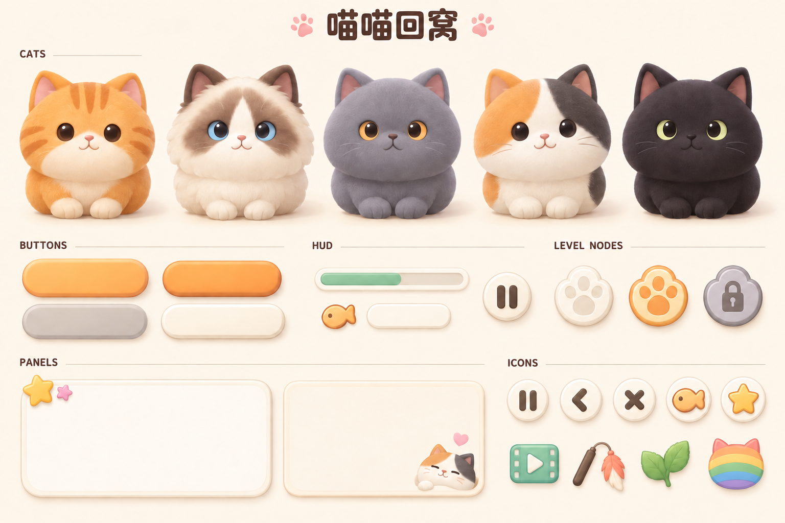

UI-03 · 候选风格自检
风格板用于选造型与材质。页面内的色卡、文字和按钮是令牌试排，均未进入 Cocos。

五猫缩小预检
每个样本等比放入标注大小的 CSS 像素框；实际猫轮廓略小于框。只显示原板局部，不导出切片，不证明透明边缘或真机猫径合格。
彩色样本
独立色卡
按钮与 HUD 试排
以下按逻辑尺寸的 50% 显示。使用当前系统字体演示文字区，不是两个候选字体的实测结果；按钮仅为状态样本。
呼噜
猫咪、面板贴花与底板后续独立制作；当前图片不能直接当九宫格或透明图集。